長期トレンド
JKMとJEPXシステムプライスの推移グラフ
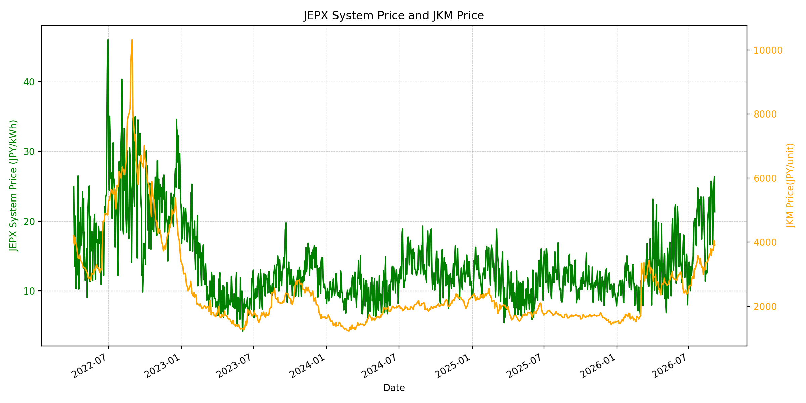
WTIの推移グラフ
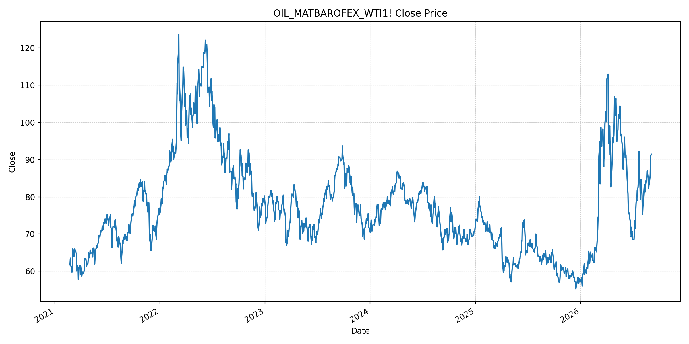
JEPXエリアプライスグラフ（直近一年分）
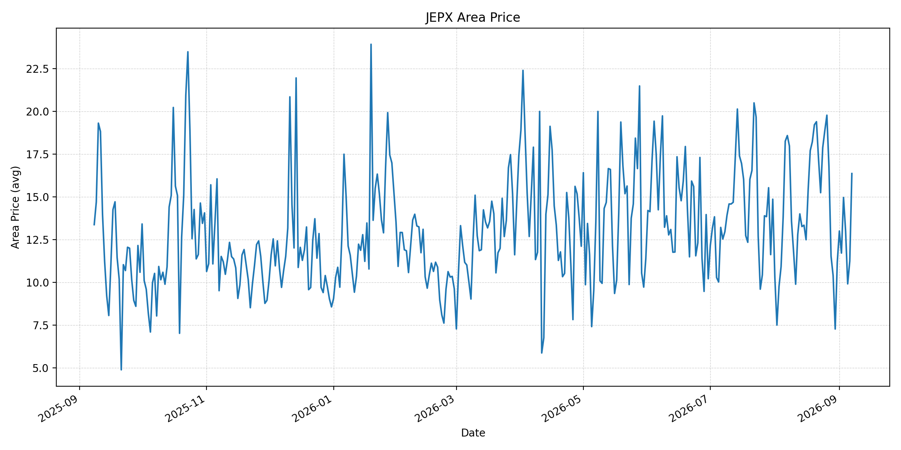
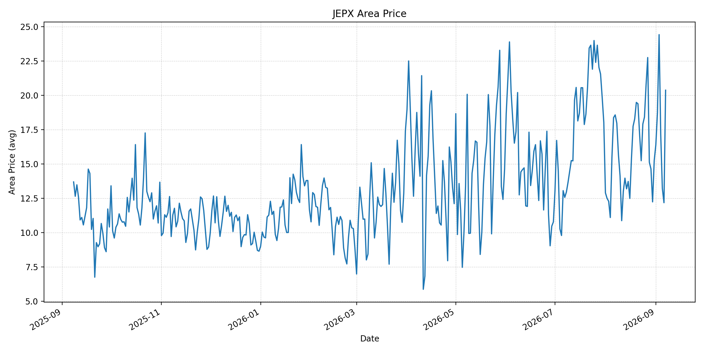
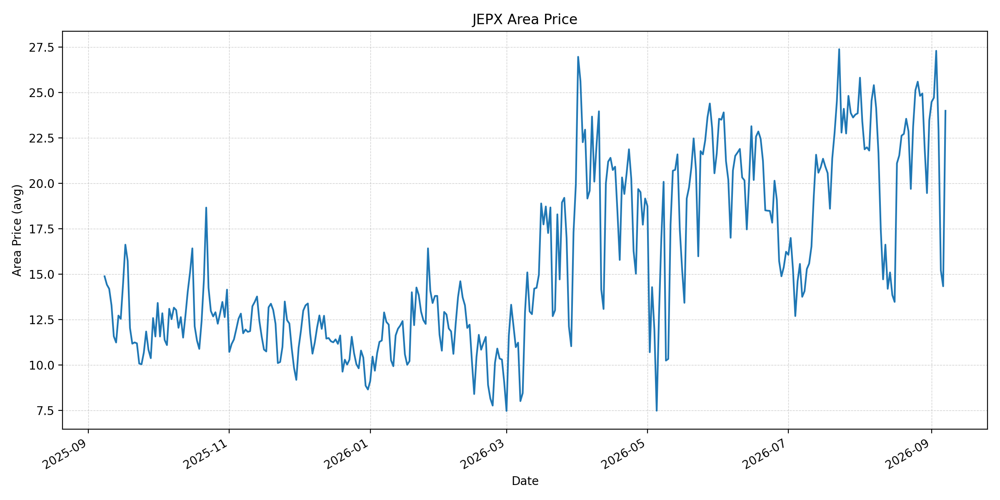
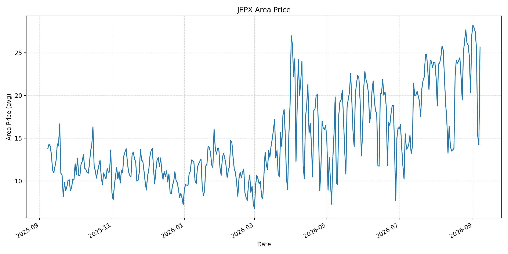
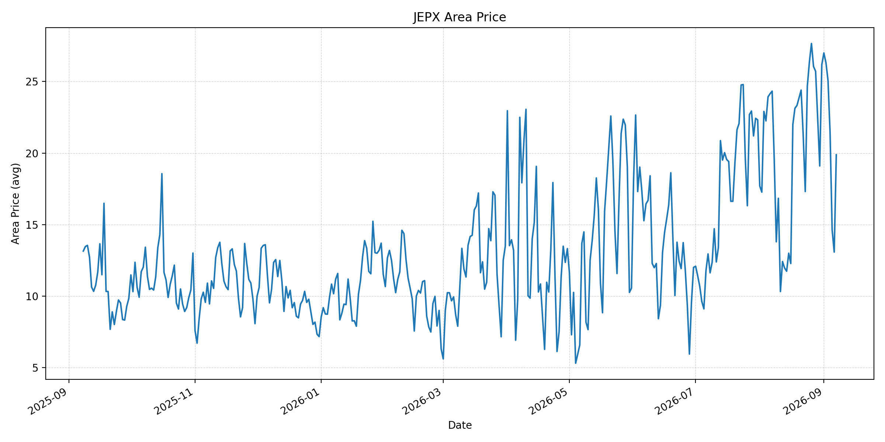
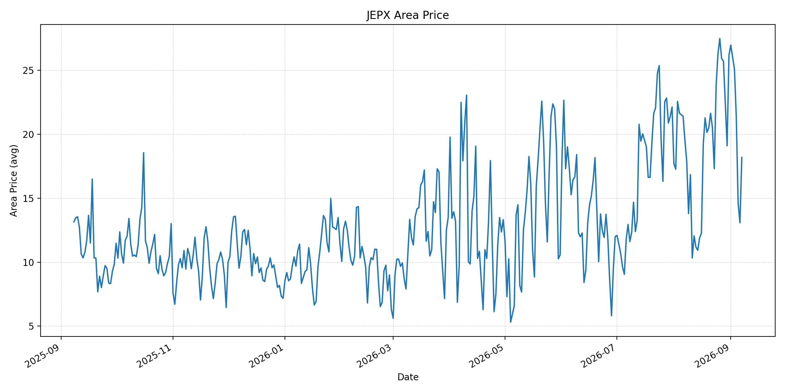
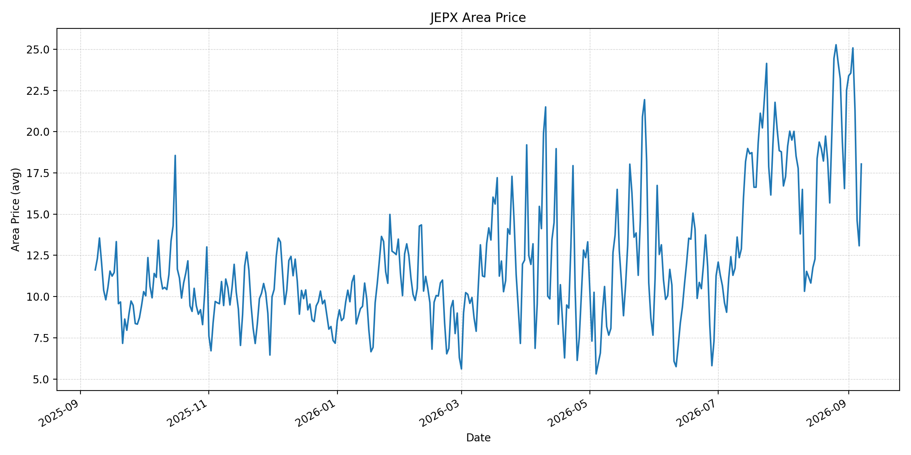
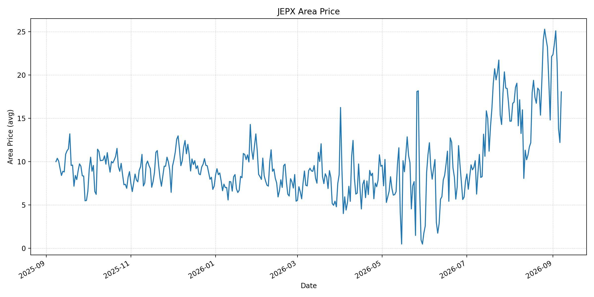
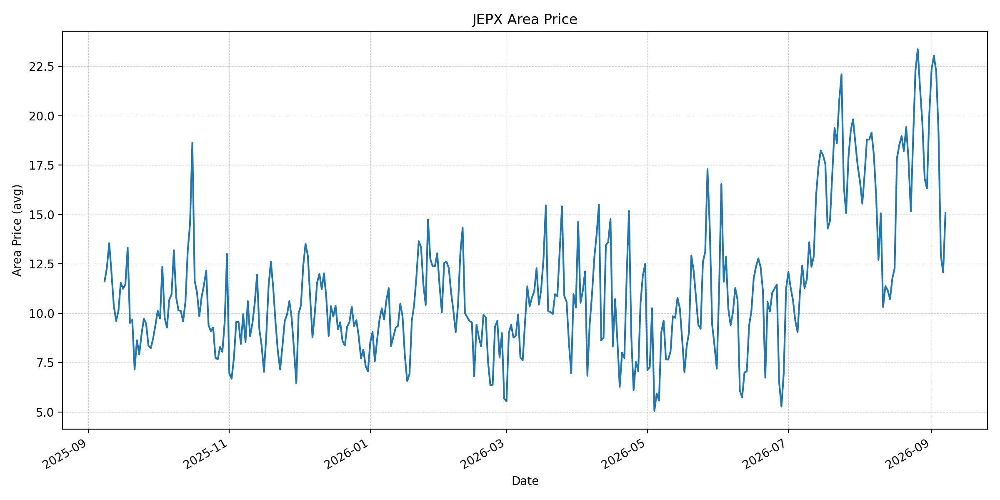
短期トレンド
JKMとJEPXシステムプライスの推移グラフ
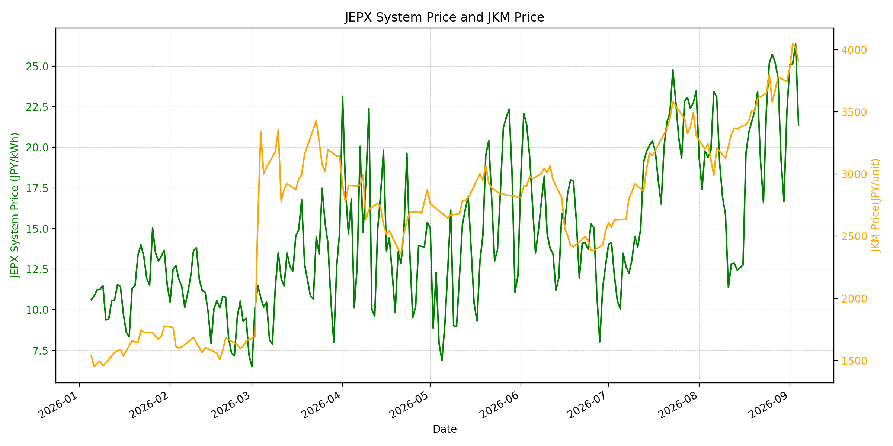
WTIの推移グラフ

JEPXシステムプライス
最新値は 2026-09-07 分、先週終値・先月終値は 2026-08-31 時点の直近値です。
| エリア | 当日価格 | 前日価格 | 前日比（％） | 先週終値 | 先週比（％） | 先月終値 | 先月比（％） | 過去最高値 | 最高値比（％） |
|---|---|---|---|---|---|---|---|---|---|
| システム | 21.04 | 13.25 | 58.79 | 22.10 | -4.80 | 22.10 | -4.80 | 64.06 | -67.16 |
| 北海道 | 16.36 | 11.24 | 45.55 | 11.18 | 46.33 | 11.18 | 46.33 | 73.92 | -77.87 |
| 東北 | 20.38 | 12.18 | 67.32 | 15.25 | 33.64 | 15.25 | 33.64 | 84.92 | -76.00 |
| 東京 | 23.99 | 14.33 | 67.41 | 23.47 | 2.22 | 23.47 | 2.22 | 86.13 | -72.15 |
| 中部 | 25.65 | 14.20 | 80.63 | 27.01 | -5.04 | 27.01 | -5.04 | 52.06 | -50.73 |
| 北陸 | 19.88 | 13.08 | 51.99 | 26.18 | -24.06 | 26.18 | -24.06 | 46.48 | -57.23 |
| 関西 | 18.19 | 13.08 | 39.07 | 26.17 | -30.49 | 26.17 | -30.49 | 46.48 | -60.87 |
| 中国 | 18.04 | 13.08 | 37.92 | 22.51 | -19.86 | 22.51 | -19.86 | 46.48 | -61.19 |
| 四国 | 18.04 | 12.20 | 47.87 | 22.12 | -18.44 | 22.12 | -18.44 | 46.48 | -61.19 |
| 九州 | 15.10 | 12.06 | 25.21 | 20.06 | -24.73 | 20.06 | -24.73 | 40.54 | -62.76 |
LNG先物価格
最新値は 2026-09-04 の LNG(close) です。先週終値は 2026-08-28、先月終値は 2026-08-31 時点の直近値です。
| 当日価格 | 前日価格 | 前日比（％） | 先週終値 | 先週比（％） | 先月終値 | 先月比（％） | 過去最高値 | 最高値比（％） |
|---|---|---|---|---|---|---|---|---|
| 3906.00 | 4015.00 | -2.71 | 3782.00 | 3.28 | 3744.00 | 4.33 | 10319.00 | -62.15 |
石油先物価格
最新値は 2026-09-04 の OIL(close) です。先週終値は 2026-08-28、先月終値は 2026-08-31 時点の直近値です。
| 当日価格 | 前日価格 | 前日比（％） | 先週終値 | 先週比（％） | 先月終値 | 先月比（％） | 過去最高値 | 最高値比（％） |
|---|---|---|---|---|---|---|---|---|
| 91.48 | 91.30 | 0.20 | 83.40 | 9.69 | 85.76 | 6.67 | 123.70 | -26.05 |
ニュース
イラン情勢に関するニュース
- イランは9月6日、ホルムズ海峡の外側に通航船向けの「排除区域」を設定する計画を示しました。商業船を狙った従来の海上攻撃に続く緊張拡大です。参照: AP, 2026-09-06
- 米・イラン双方がイラン周辺海域の船舶を攻撃したと報じられ、革命防衛隊は米海軍艦艇への攻撃強化を警告しました。参照: Reuters, 2026-09-06
ホルムズ海峡経由の石油・LNGに関するニュース
- イランは無許可航行とみなしたタンカーを標的にしたとし、米軍もイランの石油運搬船3隻を攻撃したと説明しています。航行安全の不確実性が継続しています。参照: Reuters, 2026-09-06
- 海峡を巡る対立は依然として世界の原油・LNG供給のおよそ5分の1が関わる物流リスクです。参照: Reuters, 2026-09-06
ホルムズ海峡経由でない石油・LNGに関するニュース
- 過去24時間で、ホルムズ海峡を経由しないLNG供給量を直接変更する主要な新規公表は確認できませんでした。
- 米国の封鎖と制裁はイランの輸出収入・外貨アクセスを制限しており、自由航行を促す経済圧力として用いられています。参照: Reuters, 2026-09-06
日本国内のイラン戦争に関係するニュース
- 過去24時間で、JEPX制度または国内電力需給ルールを直接変更する主要な新規公表は確認できませんでした。
- 日本は中東迂回パイプライン支援と調達先多様化を含む供給強靭化策を進める方針です。参照: Reuters, 2026-08-26
インサイト
ニュース事項による日本の電力市場への影響（短期：数日〜1週間）
- JEPXシステムは 21.04 円/kWhで前日比 58.79% です。週末の低価格から反発したものの、先週比は -4.80% です。中部 25.65 円/kWh、東京 23.99 円/kWhが相対的に高い水準です。
- LNGは 3906.00 で前営業日比 -2.71%、WTIは 91.48 ドルで先週比 9.69% です。排除区域の計画と船舶攻撃は、次の燃料調達にリスクプレミアムを再び加える可能性があります。
- 短期では、海峡の実通航量、排除区域の具体的な範囲、軍事・外交の動向を日次で確認します。JEPXは燃料市況に加え、気温、需要、連系制約で変動します。
ニュース事項による日本の電力市場への影響（長期：1ヶ月〜半年）
- システム価格は先月比 -4.80% ですが、LNGは 4.33%、WTIは 6.67% 上昇しています。燃料高が持続すれば、火力の限界費用を通じて卸電力価格を押し上げる可能性があります。
- 北海道は先月比 46.33%、東北 33.64% と上昇する一方、関西は -30.49% です。燃料要因とエリア別の需給・連系制約を分けて監視する必要があります。
- 迂回インフラと調達多様化は供給途絶への耐性を高め得ますが、代替物流の規模と継続性には制約があります。海峡の安全な通航回復と実際の調達能力を中長期で検証します。